|
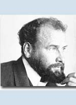 |
Gustav Klimt |
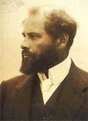 |
Gustav Klimt (1862-1918) was one of the most innovative and controversial artists of the early twentieth century. Klimt’s highly decorative, erotic female figures were influenced by an enormous range of sources: classical Greek art, Byzantine mosaics, late-medieval painting, the woodcuts of Albrecht Durer, photography and the Symbolist art of Max Klinger. Hint: move the mouse pointer over the stamp images for more information.
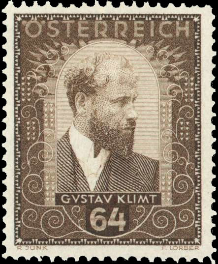
The Nouveau Art movement in Austria was called the Secession. As a co-founder of the Vienna Secession, a group of artists and architects who formed their own exhibition society and denounced the classical academic training of the time, his work embodied the high-keyed erotic, psychological and aesthetic preoccupations of fin-de-siècle Viennese intellectuals.
| 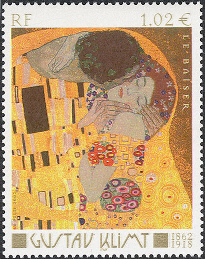 |
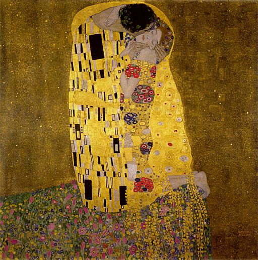 |
His painting The Kiss is a symbol of Vienna Secession. Influenced by European avant-garde movements represented in the annual Secession exhibitions, Klimt's mature style combined richly decorative surface patterning with complex symbolism and allegory, often with overtly erotic content. Gustav Klimt's style is highly ornamental.
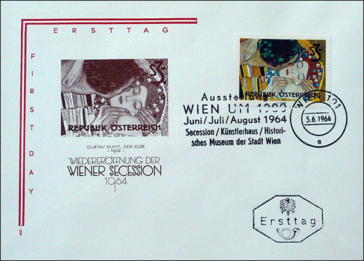
The Art Nouveau movement favored organic lines and contours. Klimt used a lot of gold and silver colors in his art work - certainly an heritage from his father's profession.
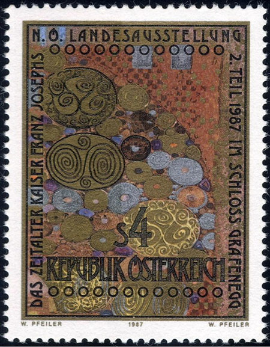
Gustav Klimt was born as the son of a gold and silver engraver in a suburb of Vienna. He had a formal art training at the Vienna School of Decorative Arts. In 1882, Klimt opened a studio of his own with his brother Ernst and Franz Matsch, a fellow student. They specialized on executing mural paintings.
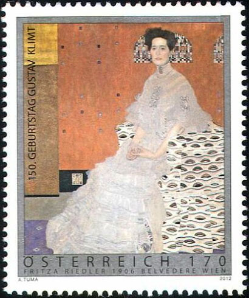
They were quite successful from the beginning and received commissions from theaters, museums and other public and semi-public institutions. In the 1880s and 1890s he produced murals for public buildings -- including Vienna's Burgtheater and new Kunsthistorisches Museum (Art History Museum) -- in the prevailing classical-realist style. Klimt's style grew increasingly experimental, however, and his murals for Vienna University, commissioned by the State in 1894, were roundly attacked by critics for their fantastical imagery and their bold, decorative style.
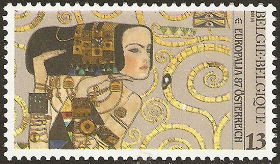
The primal forces of sexuality, regeneration, love and death form the dominant themes of Klimt’s work. In The Kiss, Klimt’s best known work, beautifully rendered figures float dreamlike in space, wrapped in an abstracted mosaic robe that veils graceful contours. The rhythmic flowing line and organic forms of Klimt’s unparalleled paintings became powerful influences on the Art Nouveau movement.
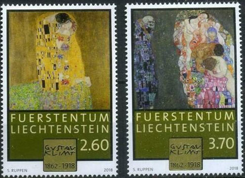
It was partly in response to this reaction why in 1897 Klimt helped to create the Secession, uniting a group of artists dedicated to challenging the conservative Academy of Fine Arts. Influenced by European avant-garde movements represented in the annual Secession exhibitions, Klimt's mature style combined richly decorative surface patterning with complex symbolism and allegory, often with overtly erotic content. Gustav Klimt became the Secession's first president. By that time Klimt had developed his own and characteristic style, which should became the trademark of the movement. Like impressionism, art nouveau was an international revolt against the traditional academic art style.
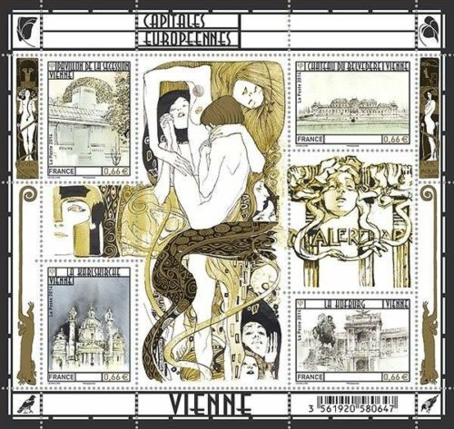
Klimt's works of art were a scandal at his time because of the display of nudity and the subtle sexuality and eroticism. His best know painting The Kiss, was first exhibited in 1908. As everything coming out of Klimt's hands, it was highly controversial and admired at the same time. By the way, initially the artist intended to name "The Golden Fishes" painting shown above as "To my Critics" but he changed his mind, following advice from his friends.
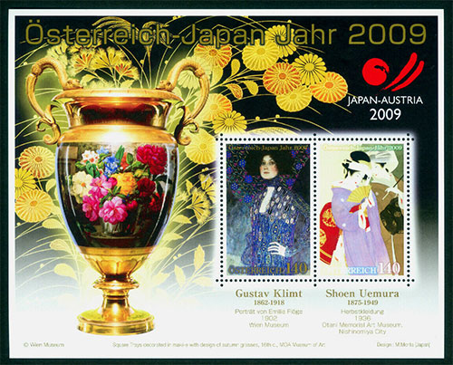
The artist created few paintings on traditional canvas, which makes the existing ones very sought-after. He saw himself more as a mural painter and decorative artist. He designed posters and worked as an illustrator for magazines - best known Ver Sacrum (The Rite of Spring). Ver Sacrum was more than a magazine. It was a building where artists could exhibit their works and publish their ideas in the magazine. Ver Sacrum was published from 1898 to 1903.
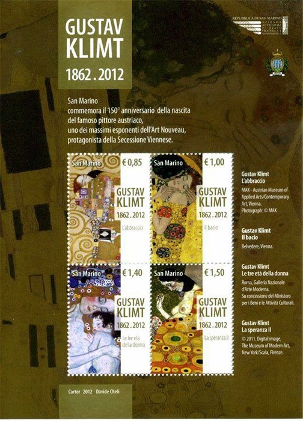
From 1900 to 1903 Gustav Klimt worked on commissions by the Vienna University for a series of ceiling murals. For his mural works Klimt used a wide variety of media - metal, glass and ceramics. After 1900 he concentrated on portraits and landscapes, although he also produced two of his greatest murals during this period -- The Beethoven Frieze, exhibited at the Secession in 1902, and decorations for the Palais Stoclet in Brussels (1904-1911).
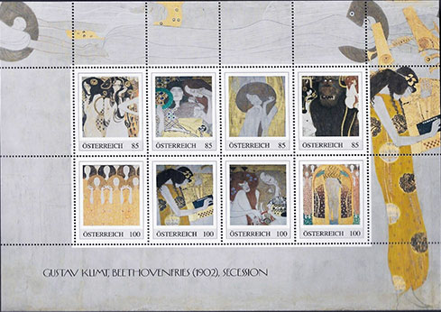
Klimt spent most of his summers on the Attersee, near Salzburg, where he drew inspiration for many of his landscapes, and where he painted some of his best-known works, including The Kiss of 1907-8. In 1911 his painting Death and Life received first prize in the world exhibitions in Rome. In 1915 Anna, his mother, died. Klimt died three years later in Vienna on February 6, 1918, having suffered a stroke and pneumonia due to the worldwide influenza epidemic of that year. He was buried at the Hietzinger Cemetery in Hietzing , Vienna. Numerous paintings by him were left unfinished .
|
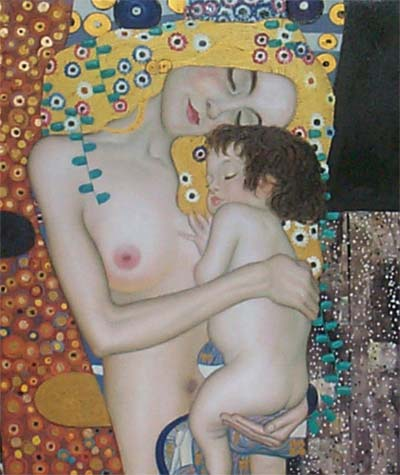 |
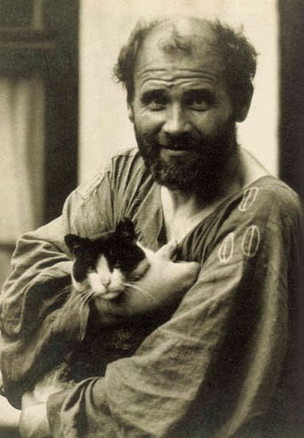 |
The Austrian Emperor Franz Joseph II disliked Klimt's art work and the
Secessionists deeply. His drivers had orders not to pass any buildings showing
Secessionist art.
In 1905 Gustav Klimt left the Vienna Secession after quarrels and
disagreements with another member, Josef Hofmann. Klimt continued his path. He
went into design works for fashion and jewelry. His understanding of art as
something that should not be confined to art academies, studios and canvases
was similar to Alphonse Mucha's activities. The very idea itself was again
revitalized with the Pop Art Movement in the sixties and seventies.
Klimt's paintings have brought some of the highest prices recorded for individual works of art. In November 2003, Klimt's Landhaus am Attersee sold for $ 29,128,000, but that sale was soon eclipsed by prices paid for Willem de Kooning's Woman III and later Klimt's own Adele Bloch-Bauer II, the latter of which sold for $150 million in 2016.
Source 1 , Source 2 .
Note: The Grenada stamps were removed because there are serious doubts concerning their postal use and the issued quantities, and replaced by more appropriate issues.
Pages on this site:
- Austrian
Stamp Book Gustav Klimt
- Judith on Postal Stamps